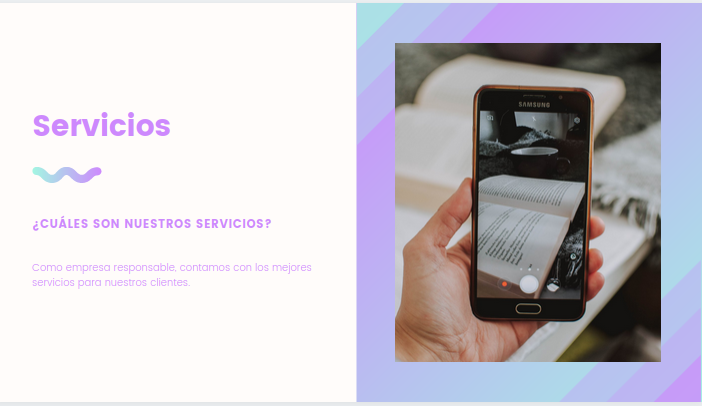

Varios clientes pueden necesitar asistencia en la creación y gestión de cuentas en diversas plataforma; la gestión de trámites legales, como el ISBN o el depósito legal o la búsqueda de fotografías para un catálogo, entre otros. En resumen, aquí entra cualquier servicio que el cliente necesite y que nosotros podamos resolver.
El conjunto de los servicios editoriales permite brindar un servicio integral al cliente. Y resolverle necesidades de comunicación que van más allá de la simple consecución de los servicios.